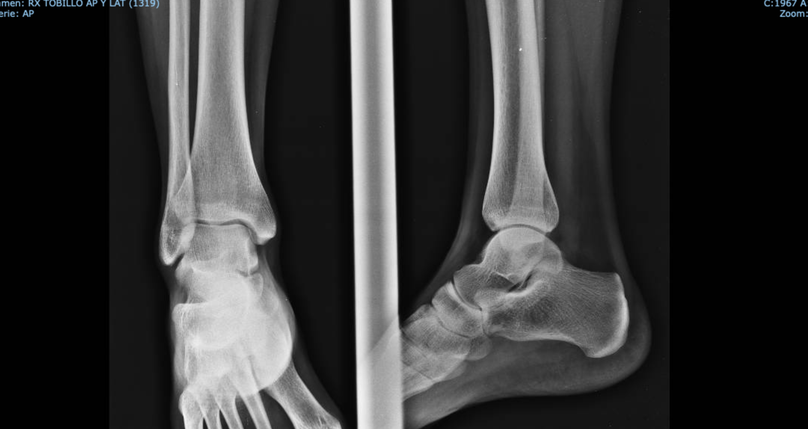
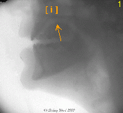
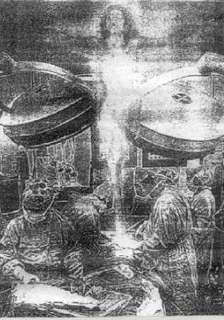
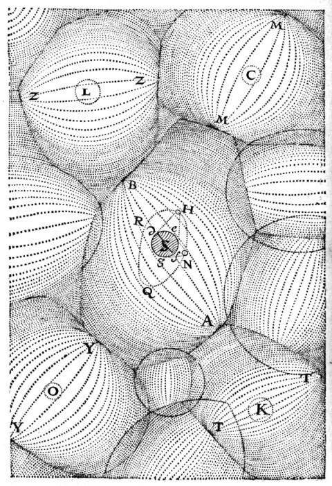
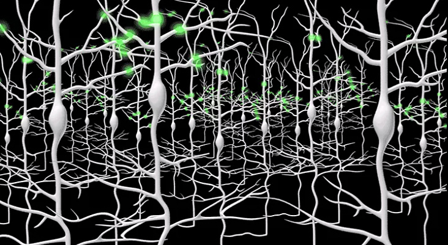

see

Anatomy of a sinner
Is there some one? can you se through my skin? my insides are no secret for you must take control pver every bit of my being

Another section of content





watch
cerebro formado aproximadamente por 80% de agua 10% de lípidos 8% de proteínas y el resto de sustancias orgánicas solubles carbohidratos y sales inorgánicas ¿cómo es posible que con estos ingredientes se haya creado una máquina como es nuestro cerebro ?
primer organismo vivo tiene 3500 millones de años
primeras neuronas 600 millones de años
homo sapiens surge hace 200 000 años
Desde la fisiología, se podría definir la conciencia como un estado
del sistema nervioso que permite la aparición de conductas,
complejas y conscientes, en función de las operaciones neuronales
temporales que predominan en ciertas regiones cerebrales. Estas
conductas complejas, que pueden ser pensamientos o bien acciones
que implican algún tipo de movimiento, únicamente se podían medir
a través de la observación directa del comportamiento. Pero, hoy en
día, gracias a los avances tecnológicos, es posible «fotografiar» la
actividad cerebral relacionada con cada tarea gracias a los
dispositivos que permiten captar neuroimágenes funcionales.
El enfoque científico con las leyes de la física
La conciencia posee dos cualidades importantes que nos permiten
describir su funcionamiento: el nivel de alerta y la experiencia de
conciencia.
El nivel de alerta se corresponde con el grado de activación
corporal y psicológica que poseemos en un momento en particular,
es decir, con la cantidad de energía que empleamos para estar
atentos a las necesidades puntuales de nuestro organismo. Cuando
estamos dormidos, vencidos por el sueño o sometidos a una
anestesia, nuestro nivel de alerta es tan bajo que nuestra conciencia
se «desconecta». En este caso, nuestro cerebro y nuestro cuerpo
necesitan una activación fisiológica adecuada para poder procesar la
información que llega a través de nuestros sentidos.
Para entenderlo mejor, podemos comparar la conciencia con un
faro. Cuando el faro está encendido (nivel de alerta alto), ilumina el
entorno que lo rodea y nos permite percibir y responder a los
estímulos. Sin embargo, cuando el faro está apagado (nivel de alerta
bajo), nuestra capacidad para percibir y responder a los estímulos se
reduce o desaparece.
En cuanto a la actividad neuronal, se ha sugerido que surge
esencialmente en la red formada por neuronas situadas en las
regiones mediales frontales y el cíngulo posterior del cerebro. Esta
red, que constituye la base neural de la actividad consciente, sería
como una orquesta: cada neurona es un músico que toca su
instrumento (los microtúbulos dentro de las neuronas) para producir
la sinfonía de nuestra conciencia.
En resumen, aunque según las leyes de la física y el método
científico tradicional todavía hay mucho que aprender sobre la
conciencia y cómo se relaciona con la actividad neuronal, las
investigaciones actuales sugieren que nuestra conciencia es el
resultado de complejas interacciones entre diferentes regiones del
cerebro.
La vida desde una perspectiva científica tradicional
En el gran universo de la ciencia, el método científico cartesiano y
newtoniano se erige como un faro de luz, guiando a los
investigadores a través de las sombras de lo desconocido. Este
enfoque, que ha sido la piedra angular de la investigación científica
durante siglos, se aplica tanto a los problemas físicos como a los
emocionales y abarca desde los misterios más profundos del
universo hasta los desafíos más íntimos de la vida humana.
La vida, bajo este prisma científico, se percibe como un fenómeno
finito. Esta visión es una consecuencia directa de los principios
fundamentales del método científico. Para ilustrar esto, podríamos
considerar la vida como un libro. Cada libro tiene un principio y un
final, y aunque las páginas intermedias pueden estar llenas de giros
inesperados, siempre hay una última página que marca el final de la
historia.
El célebre físico teórico Richard Feynman (1918-1988) afirmó: «La
ciencia es la creencia en la ignorancia de los expertos». Esta cita
refleja la esencia del método científico: siempre hay más por
aprender, siempre hay más por descubrir.
En resumen, el método científico cartesiano y newtoniano nos
proporciona una lente a través de la cual podemos examinar y
entender el mundo que nos rodea. Nos permite abordar problemas
tanto físicos como emocionales con un enfoque sistemático y
riguroso. Aunque este método puede llevarnos a ver la vida como
algo finito, también nos recuerda que hay mucho que no sabemos
sobre ella y que tenemos infinitas posibilidades por conocer.